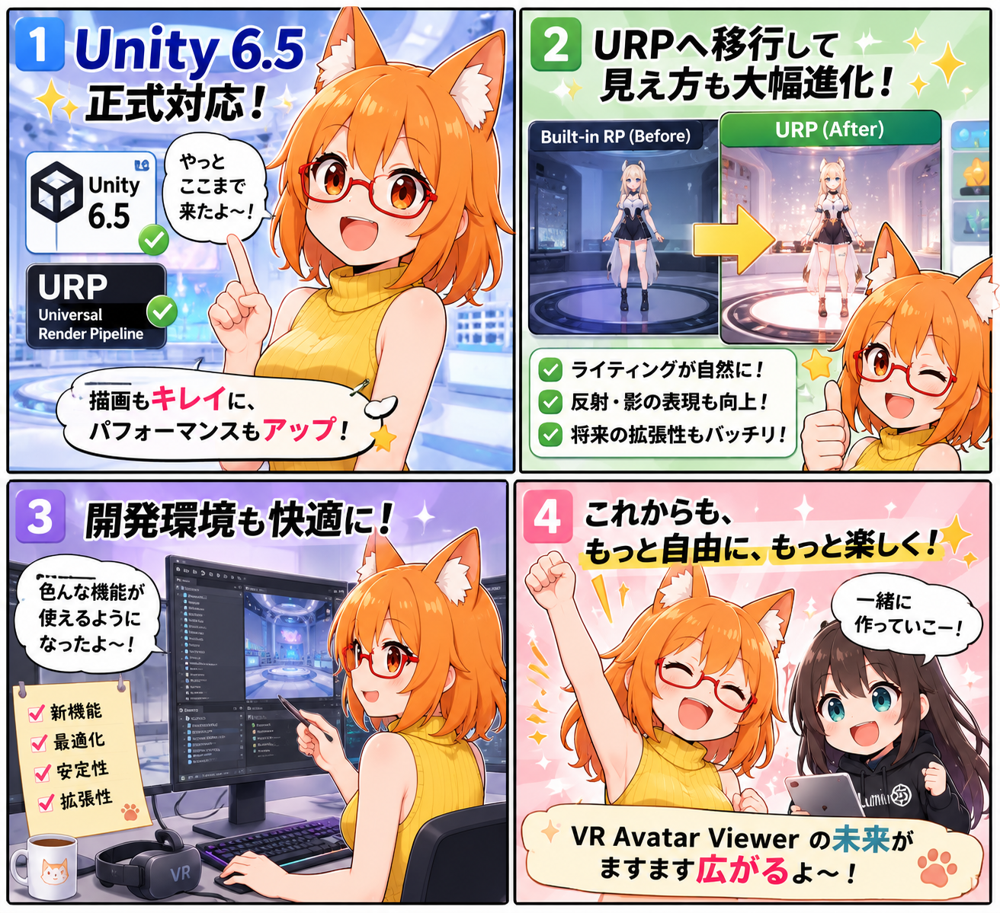

Unity 6.5・URP時代へ。見た目も速度も、まとめて土台を更新
2026-07-31 の開発日記では、VR Avatar Viewer を Unity 6.5 と URP 前提へ切り替えながら、グラフィックス品質設定、アバター表示負荷、カメラ・ミラー、VAB読み込み、物理処理、UI構成まで広い範囲を一気に整備した一日を振り返ります。

集計期間には15コミットが入り、最終HEADは 1d5918a（「URPプロジェクト設定を追加」）でした。作業中の未コミットなアバター姿勢推定関連は、この日の完了実績には含めていません。
今日の主題：URP移行を「切り替え」だけで終わらせない
レンダリング方式を URP に移すだけでは、実際の使い勝手や性能は自動的には良くなりません。そこで今回は、URP移行と同時に、Low / Middle / High / Ultra / Custom の品質プリセット、カメラごとの描画品質、負荷に応じた制御、ポストエフェクトの適用範囲までまとめて再設計しました。
デスクトップの設定画面も用途別タブへ整理され、利用者が「画質を上げたいのか」「処理を軽くしたいのか」を以前より判断しやすい構成になっています。
Unity 6.5・URPを正式な前提へ
プロジェクト設定と開発文書を Unity 6.5 / URP 前提へ更新しました。lilToon を含む既存描画との互換処理、URP用ポストエフェクト経路、Renderer Feature、最終的なURP Project設定まで整備しています。
移行作業を単なるパッケージ差し替えで終わらせず、アプリが実際に使う描画経路と設定値まで揃えたことで、今後の機能追加や不具合修正もURPを正本として進められる状態になりました。
品質プリセットと性能制御
Low / Middle / High / Ultra / Custom の品質設定を追加し、URP Asset と Renderer を品質別に分離しました。Adaptive Performance の負荷判定も見直し、負荷状況に応じて品質を調整しやすい基盤を作っています。
高性能なPCでは画質を引き上げ、VRと配信を同時に使う環境では必要な部分だけを軽くするなど、利用状況に応じた調整を今後積み上げやすくなります。
カメラを意識したアバター負荷制御
アバターが HMD、撮影用カメラ、ミラーなど、どのカメラから見えているかを考慮して更新頻度を決める仕組みを追加しました。単純にメインカメラから見えないだけで処理を落とすのではなく、撮影・配信側で必要なアバターは維持できます。
撮影用カメラ、ミラー、デスクトップ出力については、FPSと描画品質を個別に制御できるようにしました。VR内のプレビューではポストエフェクトを二重適用せず、デスクトップ出力では配信用の見た目を維持するため、出力経路も分離しています。
VAB読み込みと物理処理の高速化
VABアーカイブを何度も開き直さず、1回のセッションでまとめて処理する VabArchiveSession を導入しました。テクスチャ読み込みのコピー削減と一括処理も追加しています。
PhysBone と DynamicBone では、個別に Job を完了させる回数を減らし、複数アバター時の待ち時間を抑える方向へ改善しました。多数アバターを扱うための高速化は、描画だけでなく読み込みと物理処理の両面から進めています。
UIも大きく再編
BlendShape 操作は、最初に対象パーツを選び、そのパーツに属する表情・体形・その他の項目へ進む構成へ変更しました。複数パーツにまたがる BlendShape では、どのパーツを操作しているか分かるようにしています。
また、カメラと鏡は独立した特殊メニューではなく、プリセット機材としてアイテム一覧から扱う方向へ統合しました。デスクトップとVRの双方で、機材を配置・選択する流れを揃えています。
VAB 4.5も正式化
VAB 4.5 を現在の正式仕様として統合し、関連する仕様書、配布手順、Converter文書を更新しました。VAB 4.0 は基礎仕様と旧入力互換の位置づけへ整理しています。
ほかにも進んだこと
- 画像生成リクエストJSONを組み立てるバッチを追加
- デスクトップ設定画面を用途別タブへ再編
- ポストエフェクト設定をデスクトップ・VRの両方で調整できるUIを追加
- HMD表示、撮影用カメラ、ミラー、デスクトップ出力の適用経路を分離
- Unity 6.5、URP、VAB 4.5 に合わせて各種ドキュメントを更新
4コマの裏話
今回は、Unity 6.5とURPへの移行を喜ぶろひが、画質、互換性、シェーダー、開発環境の調整を一つずつ進めていく構成です。指定台本とは一部異なりますが、ろひの正式デザインとルミナが反映された生成画像を、ユーザー確認のうえで今回の記事へ採用しました。
今日のまとめ
この日は単一機能の追加というより、Unity 6.5正式版として今後開発を続けるための基盤をまとめて作り直した日でした。URP移行、品質設定、カメラごとの描画、アバター負荷制御、読み込み高速化、物理処理、UI再編が同じ方向へ揃ったことで、多数アバター・VR・撮影・配信を同時に扱うための土台がかなり強くなっています。
本日のひとこと
引っ越し先を変えたら、家具の配置どころか配線まで全部見直すことになった。でも、そのぶん次の改装はずっと楽になるはず。